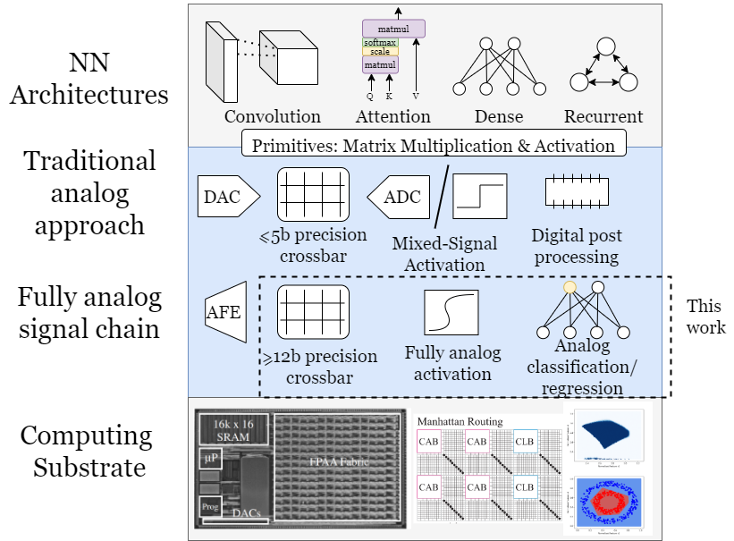
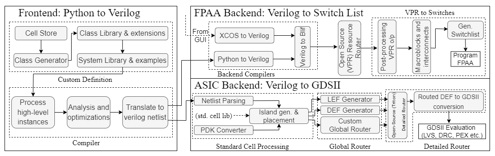
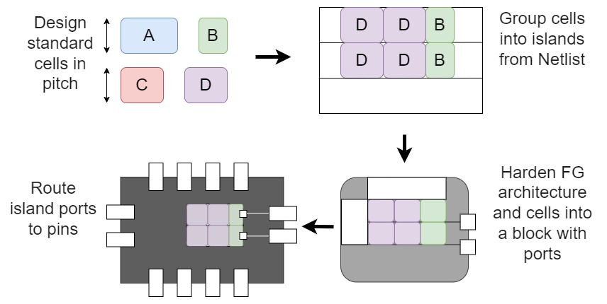
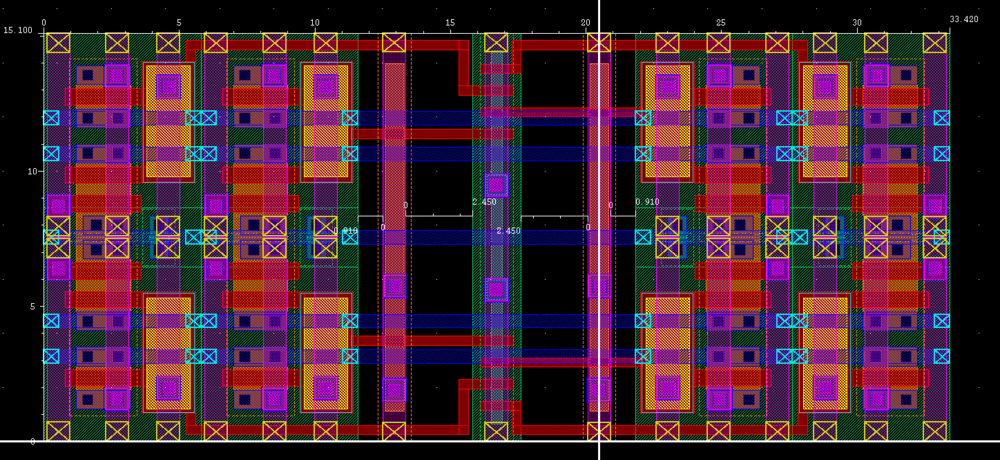

Intro
I graduated from Louisiana State University with a double major in Electrical Engineering and Computer Science in May 2020. I was privileged enough to be able to cultivate my software engineering skills working for Amazon, Chevron, and LSU physics dept (see work for details). While I still love programming, I discovered my passion for electrical engineering research working in the Applied Hybrid Electronic Materials & Structures (AHEMS) lab under Dr Daniels-Race in my final year at LSU.
I decided to pursue my hardware research interests at Georgia Tech with a master’s degree in Electrical and Computer Engineering. Over the 2021 summer, I gained valuable industry experience working on the DFT team at Apple. As for research opportunities, I found the Integrated Computational Electronics (ICE) Lab under Dr Hasler working on floating gates and analog computing. I initally joined the lab for a class credit to learn more about what they did. It was intriguing enough to me to center my master's thesis around it as well as caused me to pursue a PhD in the field.
Work
Apple
Hardware Engineer Intern - Summer 2021
· Documented complex features of DFT verification environment for the DV team
· Implemented new testbench features at request of DV methodology team
· Converted the DFT-DV testbench to a simulator agnostic design by implementing support for another Verilog simulator
Amazon
Software Development Engineer Intern - Summer 2020
· Implemented an Audit trail into a massive customer facing application and worked across the full stack.
· This required setting up a new data store, creating backend functions, creating an internal API, working with many AWS resources, and pulling information from the API to display with typescript on a React website.
Software Development Engineer Intern - Summer 2019
· Built metrics dashboard from scratch in React with Elastic Search as a data store.
· Setup a data pipeline that used an internal wrapper on Elastic Map Reduce to aggregate billions of records and write to Kinesis FireHose which funneled into Elastic search.
Chevron
Software Engineering Intern - Summer 2018
· Automated deployment process of packages to Dev, QA and Prod servers using Git, Jenkins and PowerShell.
· Implemented and enhanced automated maintenance scripts for over 30+ servers using Jenkins and batch scripts.
Chevron
Software Engineering Intern - Summer 2017
· Applied knowledge of MYSQL in analyzing and extracting interface patterns between applications
· Using the interface patterns created a deployment plan for 30+ applications to a cloud service
Louisiana State University
Student Developer
· Using MYSQL, built and maintained various databases for several websites.
· Using HTML/CSS, built and maintained various websites for the physics department.
· Wrote PHP scripts to automatically populate various webpages from MYSQL databases.
Research
Midwest Circuits and Systems
Efficient Implementation of a Fully Analog Neural Network on a Reconfigurable Platform

Abstract: This paper investigates the potential of floating gate field-effect transistors (FETs) as primitives for subthreshold computation in analog neural networks. By leveraging the inherent properties of these transistors, we demonstrate their suitability for constructing neural network activation functions, such as sigmoid and rectified linear units (ReLUs), as well as winner-take-all (WTA) circuits for softmax activation. Our end-toend analog implementation successfully classifies the concentric circles problem, illustrating the advantages of maintaining an analog signal chain throughout the process
Paper
Design Automation Conference
ASHeS: Analog System High-level Synthesis for Reconfigurable Computing

Accepted as a work-in-progress poster at the 60th DAC conference, This work presents the first automated tool flow from a high-level representation to a reconfigurable physical device. This tool starts from a high-level algorithmic description either from a custom python library or XCOS GUI to compile and lower the computation to either an Application Specific Integrated Circuit (ASIC) design or a Field Programmable Analog Array (FPAA).
Poster
CRNCH Fellowship
Automated Synthesis for Analog Computing Systems

Selected for the Fall 2022 CRNCH fellowship, this project proposes a Floating Gate (FG) architecture-aware synthesis tool that generates GDSII layout from analog standard cells and a netlist description. The outcomes of the work will be an open source tool that enables rapid creation of Application Specific Integrated Chips (ASIC) layout, a PDK conversion utility and FG standard cells across multiple process nodes.
Proposal
Master's Thesis
Analog Standard Cell Libraries

A standard cell is a level of abstraction that creates logical circuit building blocks that can be assembled to build complex architectures. The concept of abstraction using standard cells is a well-established notion in digital architecture. In fact, productivity of digital designers has been greatly supported by these cells, yet there isn't any widespread equivalent in the analog domain. Generally, due to the large number of design parameters that tend to change across process nodes, it has not been viewed as a worthwhile endeavor to create analog standard cells without reconfigurability of those parameters. This work aims to show how leveraging floating gates can create abstractable analog circuits which build into standard cells that enable large-scale, low power, mixed signal, systems-on-chip.
Thesis